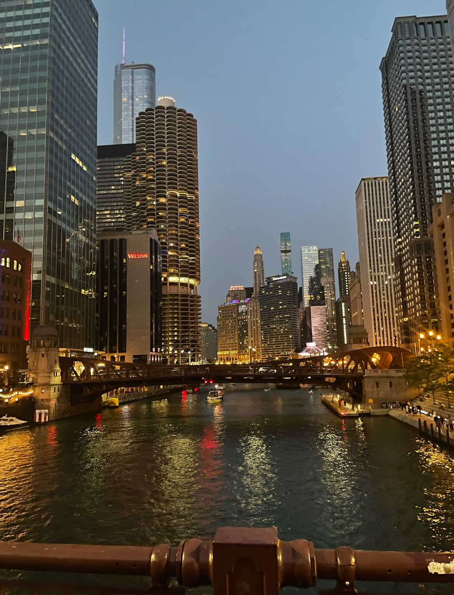
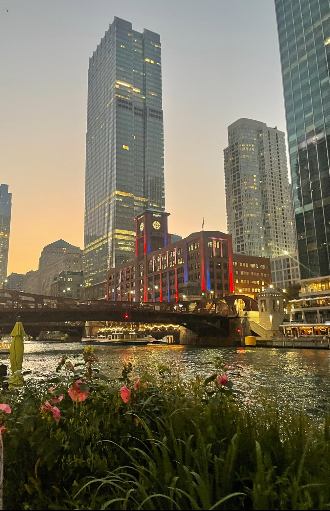
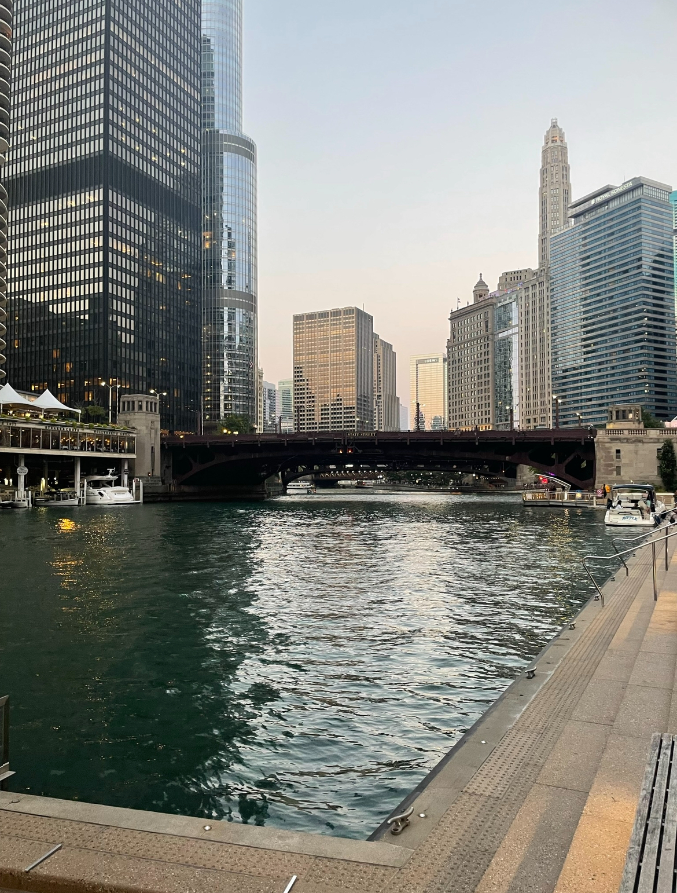

Chicago Riverwalk
Maybe I’m biased because I live here, but Chicago’s architecture is some of the best in the States. I don’t have much to say but let the work speak for itself. The lines, texture, colors, height, depth, shape, etc. It’s a sight to see seeing this downtown and being able to walk and go up into the buildings.
  I took these photos by the river walk. I went kayaking that day with some friends, and it was food! I recommend doing this activity in the summer of Chicago.
Header photo belongs to Marripati, Bhargava. "Sunset Photography of City." Pexels. https://www.pexels.com/photo/sunset-photography-of-city-2935097. 7/12/2024.